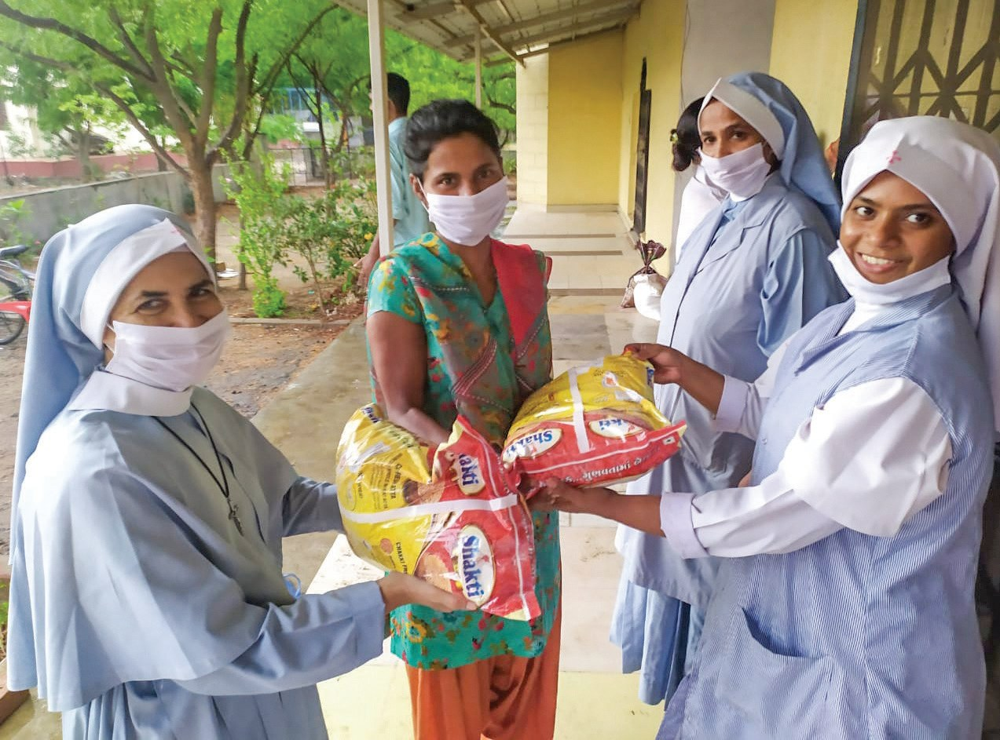
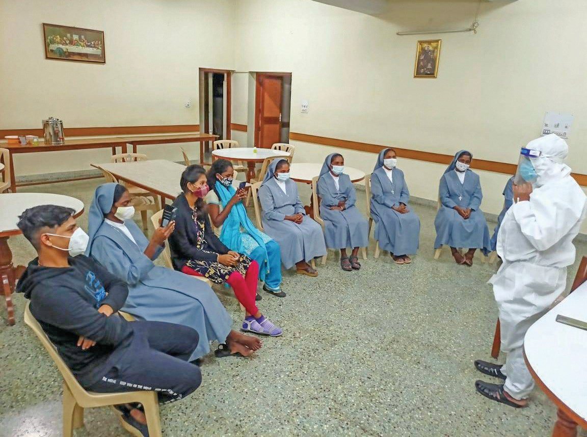
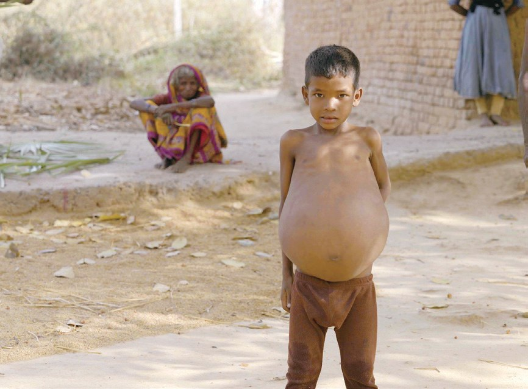
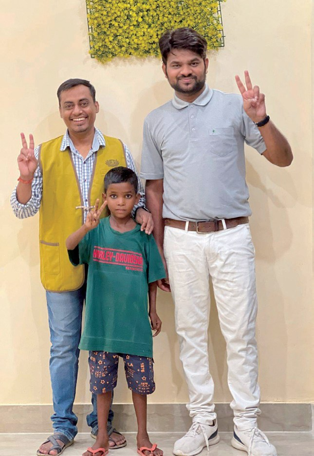
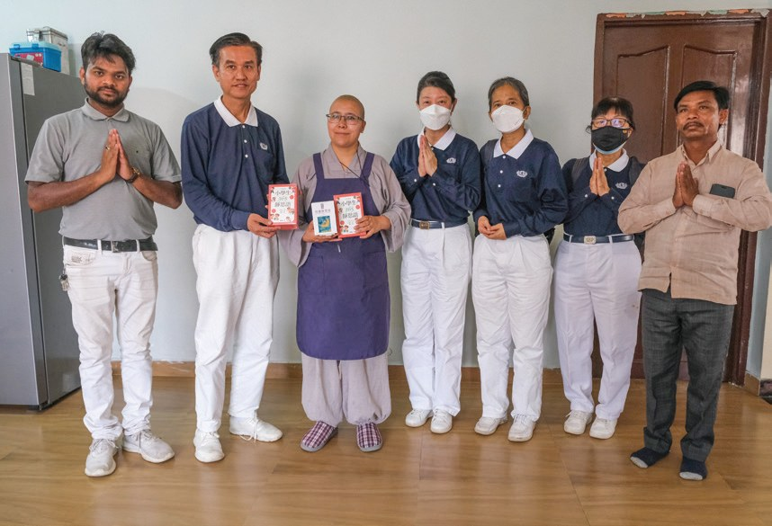
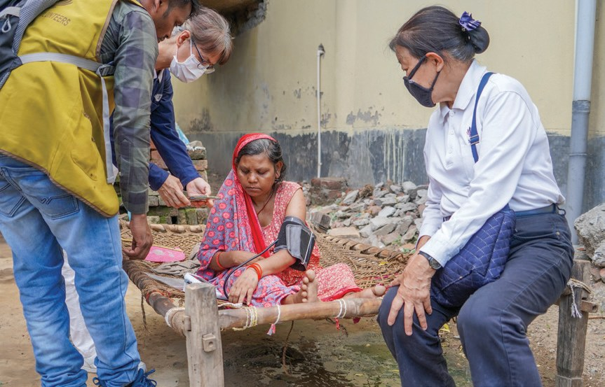
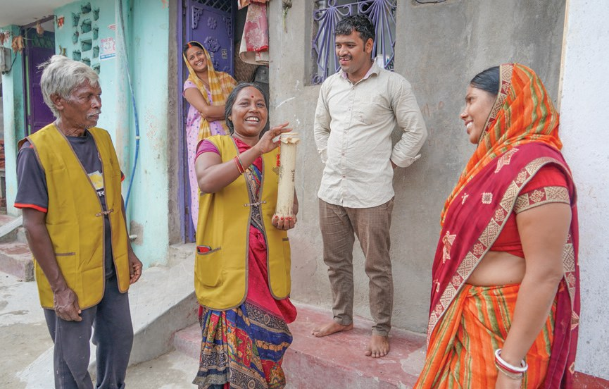
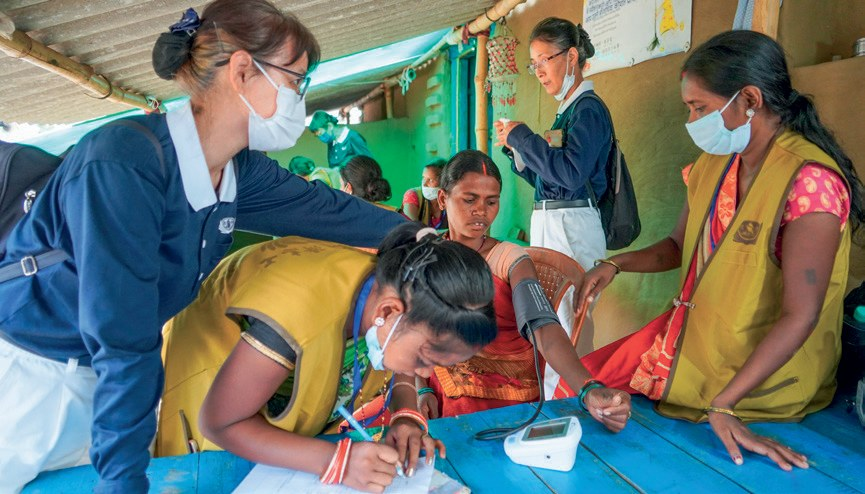
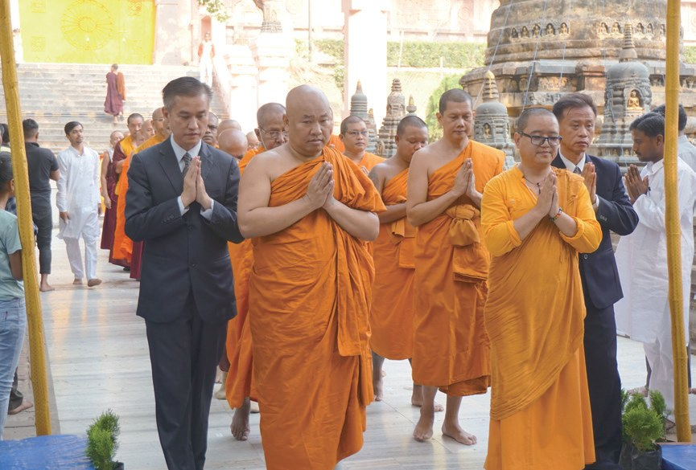
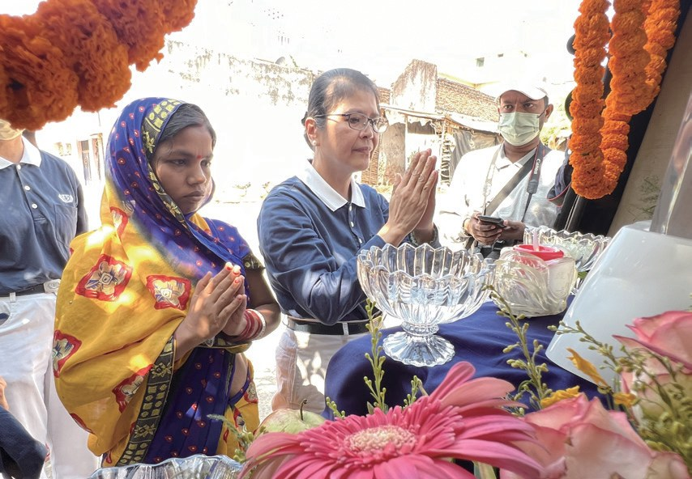

回饋佛國
善念共聚（上）
兩千五百年後，佛陀悟道的地方還有人受苦嗎？

先別急著下結論，讀完再說說你的想法～
這一篇講慈濟在印度菩提迦耶。上篇從疫情發放說起，再到一個大肚子男孩、一位為乞討孩童辦學的法師，和一位從乞討變成志工的老人。
最後，你會看到菩提樹下的浴佛，從十三個人變成兩千多人。
下面是原書的節錄，紅色底線是我們替你標出的轉折點。
讀之前：你覺得一個人一出生就很窮，最難改變的是什麼？
修女和慈濟
印度醫療體系近乎崩潰，慈濟怎樣伸出援手？閱讀引導
2020年，新冠疫情在全球爆發，印度醫療體系近乎崩潰。
至2021年9月，關懷範圍逾17邦，105,565戶次，394,621人次受益。

三十九萬人次！

「……但對我有很大的影響。我很認同慈濟的理念，所以加入成為志工。」
本土志工士楊表示・p.312「我們照顧的病患都是窮人，特別是農民。這裡有太多的窮人，來了好幾次義診，還好有印度靈醫會和佛教慈濟的物資，非常感恩有你們。」
靈醫會的修女表示・p.312
和佛教慈濟一起救人。

憑一段影片找人
影片裡一個大肚子男孩，上人一直放在心上。閱讀引導
影片中意外捕捉到一位骨瘦如柴卻腹大如鼓的男孩身影，上人心繫這位病苦男孩，於開示中多次提及，希望能幫助他。
世國騎著摩托車，憑著影片、照片，找到第七個村莊巴德里普爾村，才終於打聽到小男孩的身分
找了七個村莊！

山迪普四歲時，曾經到比哈爾省的首府帕特那市醫院就醫，但因為家庭經濟不允許，加上醫師說明手術會有風險，所以治療就此止步。
猜一猜閱讀引導
從山迪普的村莊到新德里的醫院，一趟路要多久？

經醫師評估，山迪普的狀況相當危急，須立即安排手術，第一階段的手術相當順利。
「如果你們不來找我們的話，我想我也沒辦法救孩子的命。」
一路安靜的爸爸，到家後說・p.315
到家才忍不住。
樹蔭下的教室
一位法師在街上看見滿街乞討的孩子。閱讀引導
如心法師在2011年踏上菩提迦耶的土地時，即被眼前的景象所震驚，街上滿是乞討的孩童。
生長於世襲乞丐家庭的孩子，下課後必須跟著父母乞討，改變相當不易。

就注定要乞討？

其他十所都是戶外教室，遇到天候不佳，常常無法上課。
「我真的希望孩子們不要當乞丐，希望他們好好地念書……」
如心法師表示・p.316天氣不好就停課。
當地的水都由政府從王舍城載到村莊，若當日無水車，村民就無水可喝。
經過一番對談，志工發現當地人對自己的需求相當清楚，也勇於付出與承擔。

他們能從事的工作主要有司機、清潔工、挑糞夫等等，每個月賺取的工資約五千到七千盧比，一家能溫飽已相當不易。
發現四年級的學生連基本認字都沒有辦法。他們在學校飽受歧視，家長也不願他們到學校上學
還怎麼想上學？
從乞討到布施
一位中風的婦女，一位在樹下乞討的老人。閱讀引導

「因為我長期照顧中風的母親，三福的狀況很相似，我們應該幫助她趕快就醫。」
志工郭糧銘觀察・p.319剛開始有很多圍觀的鄰居，在看到志工付出後的歡喜，也紛紛跟著投入。
也一起動手了！
甘滿季帶著志工到了牧羊女廟的苦棟樹下，表示自己大部分時間都是在這裡以乞討維生。
「我們跟他說，如果慈濟幫助您，您以後就不要去行乞好嗎？他就答應了。」
志工羅雅珍回憶・p.320
之後慈濟在菩提迦耶舉辦了各種活動，發放、大掃除，宣傳浴佛的消息等等，都能看見甘滿季穿著志工背心的身影。
甘滿季還有自己的一個米撲滿，每天都要存下一把米。

到每天存一把米！
過去是一個悲苦的臉相，要人家幫助他；現在站起來了，雙手向下幫助別人，托起臉上的笑容。
上人讚歎甘滿季・p.321菩提樹下浴佛
村民學會量血壓，浴佛車開進社區。閱讀引導
6月6日，慈濟在菩提迦耶成立健檢工作坊，並規劃培訓種子志工，教導大家使用血壓機及血糖機等

2022年的5月8日，慈濟五十六周年浴佛活動……但因為疫情緣故，只有十三名會眾參與。
此次共有來自11個國家的78位法師、2,063位會眾與26位志工參加。
到兩千多人！

志工還改裝了當地常用的交通工具嘟嘟車，作為行動浴佛車，走入社區，讓許多行動不便的人及年長者，也能一同清淨自心，感念佛恩。

停一停：誰讓你記住了？閱讀引導
選一位你印象最深的人。沒有標準答案。
有人騎車找了七個村，有人為乞討的孩子辦學，有人從乞討變成付出。哪一位讓你最有感覺？

一起回頭看看吧～
回望
依本章原文整理，每一條都標了原書頁碼。閱讀引導
背後原因
為什麼佛國還這麼苦

小川兩千五百年後，佛陀的故鄉怎麼了？
- 種姓制度
受限於低種姓，以及教育程度，他們無法獲得更高的收入。p.318
- 孩子乞討
世襲乞丐家庭的孩子，下課後必須跟著父母乞討。p.315
- 回饋佛陀故鄉
本會決定展開關懷佛國之行，以報佛恩。p.316–317
後續發展
慈濟和印度的因緣

小禾從地震到浴佛，經過了多少年？
- 2001
古茶拉底省大地震，慈濟進入勘災。p.311
- 2020
疫情爆發，與印度靈醫會合作發放。p.311
- 2022.6
本土志工世國尋找山迪普。p.313
- 2023.2.11
展開佛陀故鄉關懷行。p.317
- 2023.3.19
牧羊女村關懷中風婦女三福。p.318
- 2023.5.14
菩提樹下與靜思精舍同步浴佛。p.323
翻轉手心
從被幫助到幫助人
小禾被慈濟幫助過的人，後來做了什麼？
- 第一圈士楊
認同慈濟的理念，加入成為志工。p.312
- 第二圈牧羊女村的鄰居
看到志工付出，也紛紛跟著投入。p.319
- 第三圈甘滿季
不再乞討，每天存下一把米。p.320
以上只整理本章寫到的事；書裡沒寫到的，我們不替它下結論。
回頭看讀前的選擇閱讀引導
山迪普的病靠手術救回來（p.314）；低種姓的孩子在學校飽受歧視（p.318）；甘滿季從乞討變成每天存一把米（p.320）。病、眼光、想法，你覺得哪一樣最難？
為什麼還要每天存一把米？
只有你自己看得到喔！
準備好了就一起出發～